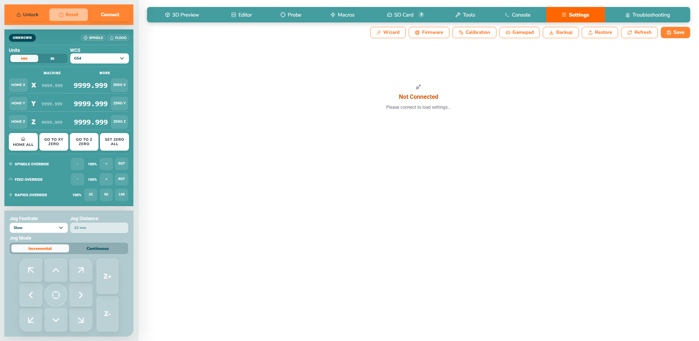
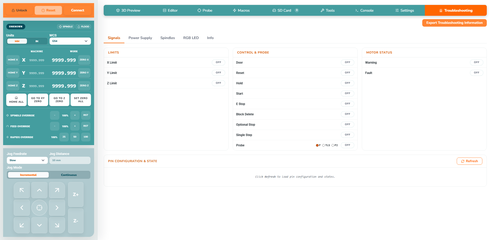
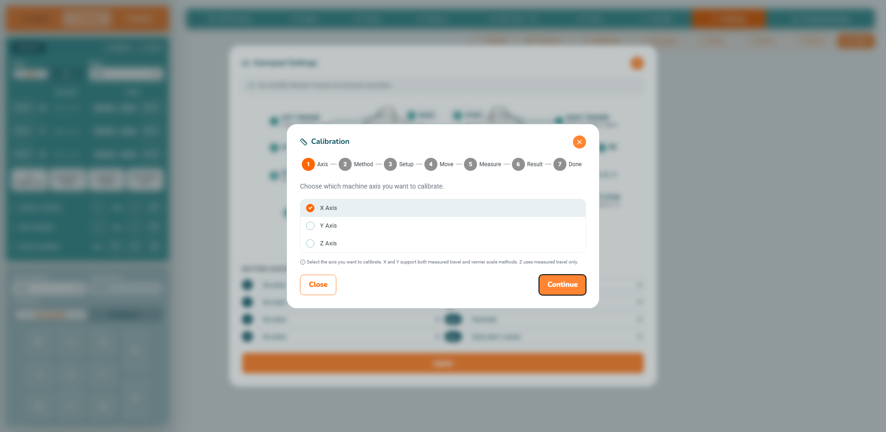
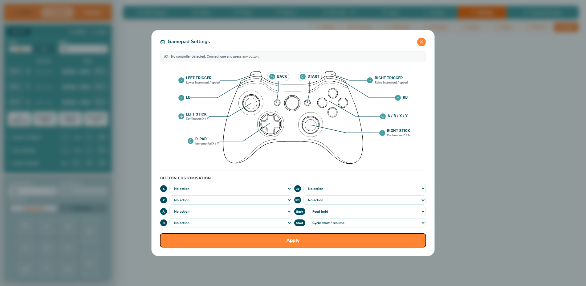
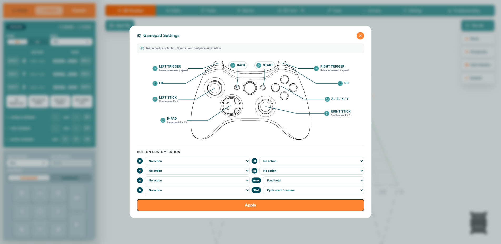

Settings and diagnostics
Settings are loaded from the connected controller. Record the original value, change only understood settings, apply through the provided controls and verify after reconnecting. Troubleshooting can inspect machine state, I/O, outputs, spindle, firmware and diagnostic data. Output tests are live electrical actions.


Calibration
Select an axis, command a known move, measure actual travel with a suitable instrument, enter the measurement and review the calculated correction. Re-home and validate with an independent second move. The complete result capture is hardware-dependent.

Configuration Wizard
Select the exact WorkBee Z2 family/size, travel, toolhead/controller and probe options. Review the summary before applying and recheck homing and limits afterwards.

Firmware Flasher
Select firmware for the exact WorkBee Z2 controller and programming device, confirm the backup, follow progress and reconnect when prompted. The existing supplied capture is marked as a placeholder if it shows another WorkBee model; replace it with a verified Z2 selection before final publication.
Gamepad and alarms
Compatible gamepads can map controls to machine actions; test slowly with the spindle disabled. Alarm, confirmation, tool-change, firmware and configuration dialogs require reading the message before proceeding. Some critical processes intentionally block closing.
